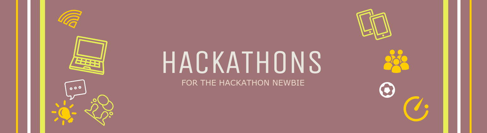

I recently decided to attend a 48-hour hackathon organised by Founders of the Future. Straight away I received some interesting comments from friends who wanted to understand more. These included questions such as “I didn’t know you’re a hacker?!”. I have to admit stringing them on that one was enjoyable.
Firstly, let’s dispel some myths; hackathons are not for just for geeks who code or wannabe hackers. Anyone can attend a hackathon, not just software developers. Non-technical skills are just as useful.
Two things are key to enjoying a hackathon in my opinion. Stay open-minded and have a willingness to learn. If you don't have that, then at least make sure you can bounce a ball and catch it. More on that later :-)
So let’s address some burning questions.
What the heck is a 'Hackathon' & should I attend one?
Typical hackathons will ease you into the weekend with a few social ice-breaking activities. Potential favorites are rock-paper-scissors and forming random unrelated words into potential business ideas. For instance ‘sushi shaped marshmallows’! This is a real example of a quick 5-10 minute idea forming into a funny pitch.
The key at this point is for you to get out of your comfort zone and feel relaxed in a new creative environment.
Post ice-breaking activities, participants are encouraged to pitch ideas they wish to work on during the next 48 hours. At this preliminary stage pitches are generally high-level and half-baked around the theme set by the organisers.
Making the short list
Everyone gets to vote for 2 - 3 ideas each and the ones with the most votes are shortlisted. This is the chance to back the idea(s) that resonate best with you. It is also important that your personality does not clash with anyone on the team. One way to avoid that is by picking as diverse a team as possible, so you can truly bring something different to the table. After all you’ll be spending long hours with these people and be expected to deliver something under a pressing timeframe.
So ice-breaking is over. Ideas have been shortlisted. You've formed a team. Now the excitement can begin. Bring out those bouncy balls!(*) Especially for those awkward moments.
(*) Debates and decisons under time pressure can easily get heated. An easy-to-do trick if everyone has an opinon is to use an object such as a squishy ball to represent a microphone. That helps allow everyones opinion to be heard and avoid interruptions.
Enjoying the Process
Whatever you do, just don’t panic! If you fear that you cannot contribute much to the team; breathe. Create a role for yourself, or support someone else in a task. You should recognise the fear and move on. Get ready to learn by doing something you’re not used to doing and are probably not good at. Whether that is building a mobile prototype, identifying a target market for a product or creating a pitch slide deck, everyone has a role.
The earlier you get comfortable with these crazy like-minded people the better.

What can I gain from attending a hackathon?
#Difficult situations call for creative approaches.
Most Hackathons have a theme of some sort. For instance, the Founders of the Future was centered around ideas for improving gender diversity in the workplace. So this was a hackathon open to anyone interested in that theme. These like-minded people will all have different skills and backgrounds. Their professions may range from accountants, to business consultants, to software developers etc. What makes the experience worthwhile is adapting to different situations.
There is no room for egos. They should be left miles away from the door. Communication skills are essential and this is the ideal opportunity to enhance those skills. Especially when a team member proposes an idea at the eleventh hour, and you need to politely and diplomatically agree to disagree, diffusing the situation gracefully. Not everyone can do that without pulling an emoji face or bruising someone with a bouncy ball.
#Get out of your comfort zones
The time pressure to deliver something you have never done before is going to be exhilerating. Some people claim a weekend hackathon is equivalent to 6 months’ worth of a “day job” (that says a lot about some peoples' day jobs!).
You’ve never created a mobile prototype using a software you've never heard of? This is your chance. You’ve never developed a survey using Google Forms? Here is your opportunity.
Start where your comfort zone ends. That’s where the magic happens.
#Networking
Say goodbye to inhibitions. Exchanging ideas and learning something new may not sound like fun to everyone. This is also an opportunity to develop new connections. Not just the people in your team but other participantsas well. Lurk around the free food and coffee during the breaks and you’ll soon find someone who is working on something interesting.
Not forgetting the mentors who are present at key points during the process.
They offer insights into:
- how best to formulate ideas into a viable business.
- potential pitfalls to avoid
- how to tie things together into a convincing pitch.
Speak to them people offline if you have a burning idea, even unrelated to the hackathon. Generally people want to be helpful.
These should be enough reasons to attend your first hackathon and give you some idea of what you can expect. I went in with no expectations other than to be around energetic, like-minded, crazy people who I can learn from.
Written by Angela Kakiiza